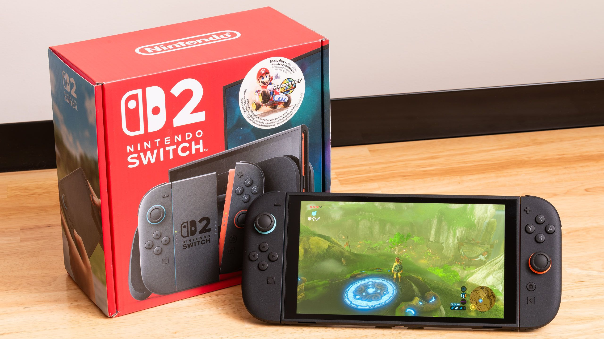

Nintendo lo confirmó el 8 de mayo: la Switch 2 sube USD 50 a partir del 1 de septiembre de 2026 en Estados Unidos, pasando de USD 449,99 a USD 499,99. El aumento aplica globalmente y el presidente de la compañía, Shuntaro Furukawa, se disculpó públicamente por la medida.
¿Por qué sube el precio?
Nintendo apunta directo a los precios de la memoria como la causa principal. La DRAM y la NAND flash tuvieron subas históricas en 2025 y 2026, y la empresa dice que el impacto "se espera que se extienda a mediano y largo plazo". En términos más crudos: los chips que usa la consola ahora salen más caros de fabricar, y Nintendo lo está trasladando al precio final.
No es el único jugador que lo hizo. PlayStation ya anunció subas en la PS5 y PS5 Pro en marzo de este año. El mundo del hardware está siendo golpeado por la misma ola de costos.
Cuánto sube en cada región
El impacto varía según el mercado:
- EE.UU.: de USD 449,99 a USD 499,99 (efectivo el 1 de septiembre)
- Europa: sube €30, llegando a €499,99
- Canadá: sube CAD 50, llegando a CAD 679,99
- Japón: de 49.980 yen a 59.980 yen (ya vigente desde mayo)
El suscripción de Nintendo Switch Online también sube en algunas regiones, aunque Nintendo no detalló todos los mercados afectados todavía.
Lo podés evitar comprando ahora
El aumento en EE.UU. y la mayoría de los mercados recién entra en vigor el 1 de septiembre. Eso le da unos tres meses y medio a quienes estén pensando en comprar la consola para hacerlo al precio actual antes del ajuste. No es un descuento, claro, pero es la opción si ya tenían en mente la compra.
Las ventas ya iban a bajar igual
Independientemente de la suba, Nintendo proyecta una caída del 16,9% en ventas de hardware durante el ejercicio fiscal que termina en marzo de 2027: 16,5 millones de unidades contra las cerca de 20 millones que vendió el año anterior. Furukawa admitió que la noticia del aumento va a generar "reacciones negativas" y prometió compensarlo con un "robusto lineup de software" en los próximos meses.
La Switch 2 sigue siendo una consola con excelente recepción. Con más de 20 millones de unidades vendidas en su primer año y una biblioteca que incluye títulos de primer nivel, el movimiento de Nintendo no es el de una empresa en problemas — es el de una empresa que está absorbiendo costos que ya no puede esconder.
Para el mercado argentino, donde las consolas llegan con impuestos y tipo de cambio, cualquier suba en el precio base impacta directo en el precio final. Si estaban en la duda, el reloj ya corre.